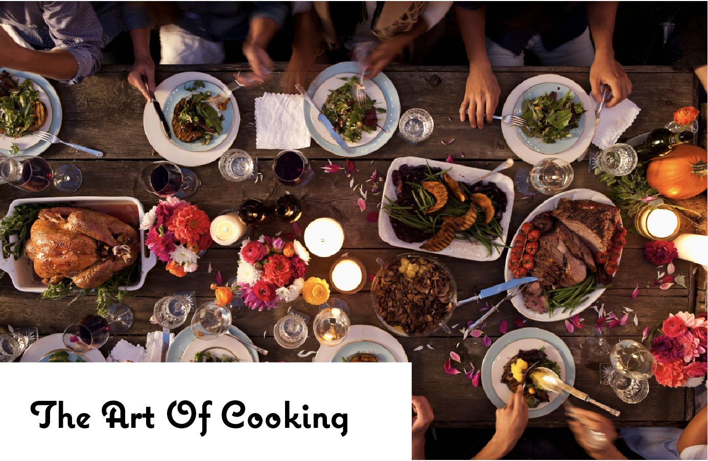

Welcome To Cooking For College
About Me
Louise Jensen
My name is Louise Jensen. I was born and raised in Hong Kong,
but I'm originally from Denmark. I'm studying at the
University of Miami,
currently a Junior.

My Favorite Foods
1. Pizza
Nothing can beat pizza.. Especially pizza hut nice thick buttery crispy crust and soft mellow melting cheese.
2. Chocolate
Chocolate is a typically sweet, usually brown food preparation of Theobroma cacao seeds, roasted and ground, and often flavored with vanilla. Chocolate is always a relaxing thing to eat whenever you are tired or whatever the case. It is creamy and rich and will always calm your nerves. Chocolate is so the way to go.
3. Ice Cream
You got in a fight with your parents? Your bf just broke up with you? Did your bff just ditch you for the "cheerleaders"... Well.. at least we will always have ice-cream until everything gets better : )
4. French Fries
Fries in America are generally salted and are often served with ketchup; in many countries they are topped ...read more. This stays my favourite food forever. Try it with curry ketchup and mayonnaise on it plus chopped onion.
5. Steak
Steak is a piece of heaven sent by god, it's deliciousness is divine, and it's tenderness is unimaginable.
. . .read more
University of Miami Food Guide
To be completely honest, I'm not sure if I was more excited to return to Coral Gables to see my friends, or to eat the food I missed over the summer. Though I've only been a 'Cane for a year, I've made it my mission to never settle for a mediocre dining hall meal and instead discover the dope food around the University of Miami. Trust me, there's a lot of it. So whether you're a freshman who knows nothing, or a senior just looking to expand your horizons, here's a guide that will ensure your food is nothing less than bomb. You can thank me later.
1. When you're dying for something sweet: Whip 'n Dip Whip 'n Dip has been churning their homemade ice cream since 1985. In addition to the ice cream, all of their other products are made in-store, and use locally-sourced ingredients. Somehow their vanilla lite ice cream only has 18 calories in an ounce. I'm not even gonna question that, I'm just gonna be appreciative. Order: Chocolate Vanilla Swirl with Crispy Critters on top. Location: 1407 Sunset Dr., Coral Gables
2. When you need Mexican food: Coyo Taco.
3. When you're "doing it for the Insta: Threefold Cafe!
...read more
Nutrition
Nutrients are the constituents of food necessary for maintaining optimum body metabolic functions. Knowledge of right nutrition helps understand our daily requirements of calories, minerals, vitamins, and phytonutrients. For instance, overweight or obesity puts you at risk of developing many diseases, especially coronary heart disease (CHD), stroke, diabetes, and cancer.
The majority of these conditions can be avoided OR at least put off by adopting healthy eating habits. The main objective of this blog is to guide viewers aware of the nutrition facts about the food they eat. The blog provides the in-depth profile of each food item available around you. The Nutrition Blog keeps you updated with all additions and changes to the nutrition-and-you.com website.
Protein Of the three nutrients, we're least concerned about protein. Not because it isn't important 50% of our body weight is made up of protein—but because adolescents in the United States get twice as much protein as they need.
Carbohydrates, found in starches and sugars, get converted into the body's main fuel: the simple sugar glucose.
...read more